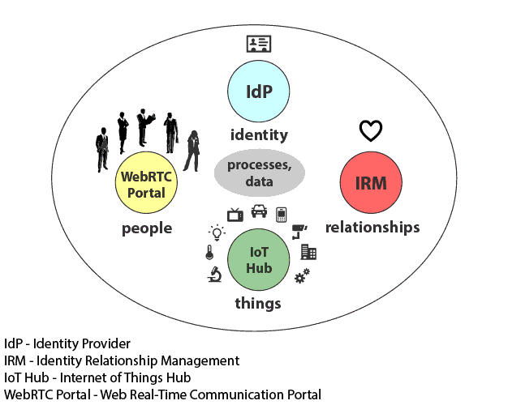

Internet of Everything
Cisco defines Internet of Everything (IoE) as bringing together people, processes, data, and things to make networked connections. The network plays a critical role in the IoE - it must provide an intelligent, manageable, secure infrastructure that can scale to support billions of context-aware devices.
There are four principal issues that are going to have to be resolved.
- Connectivity
- Identity
- Manageability
- Security and Privacy
In the below picture you can see my vision of what an IoE network platform should look like.
IoE Stack

The IoE Stack addresses a design model to handle connectivity, identity, manageability, security and privacy issues.
Connectivity Interactive Connectivity Establishment (ICE) is a standardized mechanism for establishing peer-to-peer communication between software agents running behind NAT firewalls. In a distributed and heterogeneous IoE scenario, this mechanism comes handy for interconnecting people and devices inside and outside the enterprise boundaries.
Identity Modern Identity Management is an enabler for networked people and devices. A new OpenID Connect authentication standard can be implemented across virtually any application or service. A trusted OpenID Connect Identity Provider can ensure identity across people and IoT devices.
Manageability An essential part of managing trust and security in the IoE world is Identity and Access Management. One of the ways to manage meshed network connections between people and devices is through Identity-Based Network.
Security and Privacy Datagram Transport Layer Security (DTLS) is used to provide communications security and privacy for datagram protocols. DTLS allows datagram-based applications to communicate in a way that is designed to prevent eavesdropping, tampering, or message forgery.